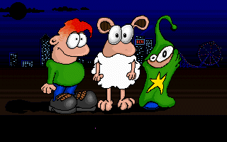
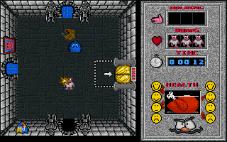
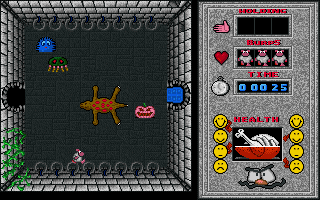
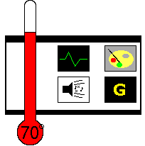

|
Burps Stuart Collier and Andy Hewitt, 199? |
|  | What's the deal with sheep? I mean, you can't do anything these days without running into a sheep. They're on television, they're in books, they're in magazines, and worst of all they're in computer games. I remember the days when the only time you saw a sheep was when it was sliced up and sitting on your plate. These days you're not even safe when playing on your computer. |
| You may be wondering why I'm ranting about sheep. Well, Burps contains a sheep. A sheep named Flossie. This sheep is one of three characters you can play, trapped inside a phenomenally large castle. There's only one way out - through the front door. Unfortunately, it's locked, which means you have to find the key. And the key's been split into three parts. Yes, that's right, it's Atic Atac, only the names have been changed to protect the guilty. | |
| I loved the original Atic Atac. I played it to death, and it took me years to finally crack the thing. It was tough, but it was also fair. The panic that set in as your energy bar dwindled, the chicken's flesh falling from its bones, was absolute, and you'd hammer from screen to screen desperately hunting for a quick snack to power your little sprite back up again. Burps is very similar, albeit with different sprites. The playable characters are very different; a sheep, a lunatic and a wizard. They all fire the same old weapons, though, and die in exactly the same way (which you'll see a lot of). It's all pretty close to the original Ultimate classic. |  |
| The biggest difference you'll notice, though, is the map. The map is completely different. The map is also very much bigger. You'll be running about the layrinthine castle for hours before you know exactly where you're going. Still, about an hour's play quickly revealed the three parts of the key, and it was with a little disappointment that I brought them back to the lobby for assembly. Picking up all three parts, I hit the door and prepared for the end sequence. No dice. The door stayed shut. Figuring that I'd put the key together in the wrong order, I reassembled it and tried again. Still nothing. A few more combinations were equally unsuccessful. An uneasy feeling stirred inside, and I ventured out a little deeper into the castle, where I found the one thing I didn't want to find - another key part. At least one of the others was a dummy. Further exploration turned up more key parts, and I got six before being killed (again). |  |
| Burps is a difficult game. The basic Atic Atac premise is difficult enough, but with the addition of dummy key parts, the skill required is ramped up quite high. This one is very, very tricky. If you've got the perseverance, I'm sure it can be cracked. And, well, I finished the original, so... How difficult can it be, really? |
|  |
Graphics: 65° Generally nice graphics, although the sprites seems a little C64-esque at times Sound: 5° Eurgh. Gameplay: 80° It's tough. It should be a while before you crack this one. Gamelife: 80° It's tough. It's very tough. It's also quite frustrating when you have to try all those combinations of all those key parts while trying to dodge/shoot the bad guys at the same time. Summary: A good Atic Atac remake that just might be a little too hard for it's own good. Nathan Cross |
| Back to Contents |